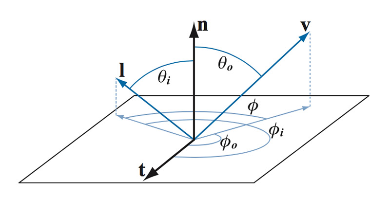
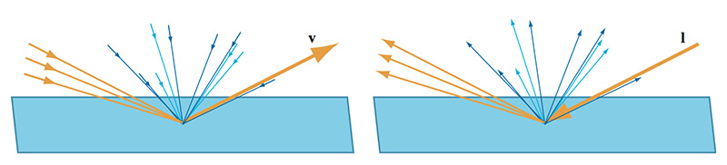
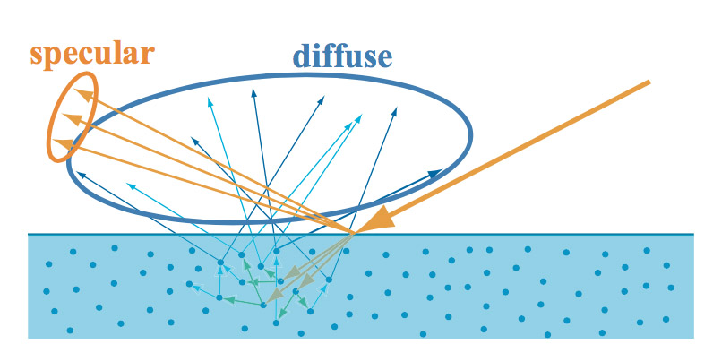
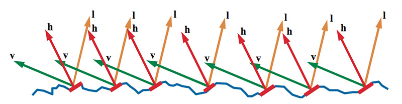
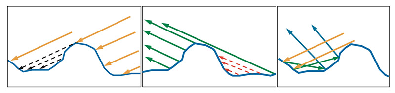
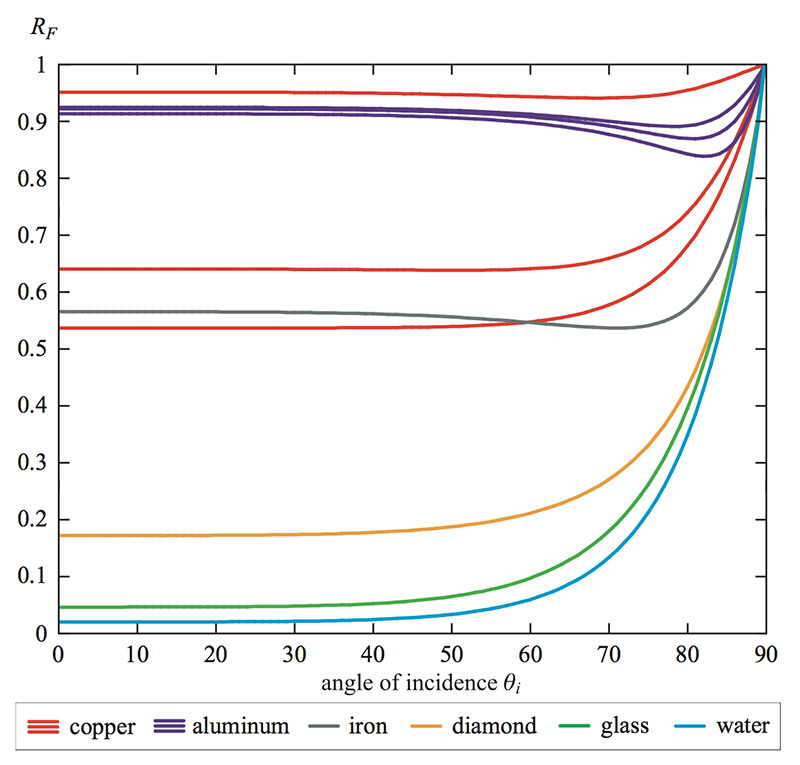
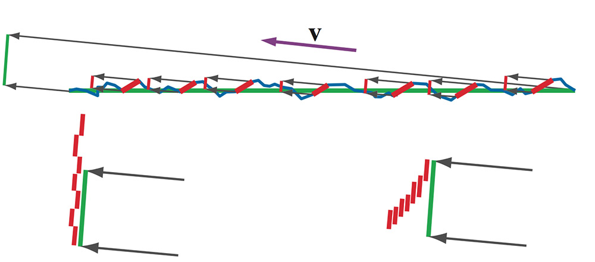

基于物理的着色 2（译）
2016-5-30
原文：Background: Physically-Based Shading @ SIGGRAPH 2010 Course: Physically-Based Shading Models in Film and Game Production
着色中的数学
电磁辐射（包括可见光）的是使用辐射度来测量的。有各种不同的辐射量用来测量表面或方向上的光。我们一般只是关心用来量化光强度的沿着单一射线的辐照度（Radiance）。我们使用通用的辐照度标记 L 来表示辐照度，当对表面上一点着色时，$$$ L_i $$$ 表示即将到达表面的辐照度（射入），$$$ L_o $$$ 表示射出的辐照度。
辐照度（类似其它的辐射度量）是一个光谱量，是以不同波长为变量的一个函数。理论上来收，为了表现可见光的辐照度，需要存储一个连续的光谱分布。在一些特殊的渲染程序中确实需要密集的光谱采样，但是目前所有的产品级的渲染（电影和游戏），都使用 RGB 来代替。
BRDF
着色在局部进行是最常见的假设（Figure 17）。这种情况下，表面上的一点如何影响光只依赖于射入光和射出光的方向。在这篇文档中，我们会使用 $$$ v $$$ 表示一个沿着射出放线的单位向量，$$$ l $$$ 表示一个射入方向反方向的单位向量（让所有的向量远离平面是为了计算方便）。光线对表面的影响使用一个叫做 BRDF 的函数来量化（Bidirectional Reflectance Distribution Function），使用 $$$ f(l,v) $$$ 来表示。每一个方向（射入、射出）都可以使用两个数字来表示（极坐标），所以 BRDF 的总体维度是 4。大多数情况下，围绕着法线旋转 $$$ l $$$ 和 $$$ v $$$ 不会影响 BRDF。这种各项同性的 BRDF 可以使用 3 个角来参数化（Figure 18）。实际情况中，参与到计算中的角的数量通常会从 1 到 5 个不等，一些常用的角如图 Figure 19。

Figure 18：BRDF 依赖于射入和射出方向，可以使用四个角来参数化表示，如果是各项同性的话三个角表示。$$$ n $$$ 是表面的法线，$$$ l $$$ 是入射光方向向量，$$$ v $$$ 是射出方向向量，$$$ t $$$ 是切线向量（只有在各向异性中使用，当 $$$ l $$$ 和 $$$ v $$$ 绕着 $$$ n $$$ 旋转时，反射行为发生变化）。
Figure 19: 在 BRDF 计算中，常用到的一些角度。

原则上，BRDF 只定义了光线 $$$ l $$$ 和观察 $$$ v $$$ 方向，另一方面，$$$ n \cdot l $$$ 和 $$$ n \cdot v $$$ 必须是非负数（两个单位长度的向量点乘等于这两个向量夹角的 $$$ cosine $$$ 值，如果是负数，说明夹角大于 90 度）。在着色器中，只有当需要表现超过 90 度范围的角度时，这种情况才会出现（例如，法线贴图可以让法线背向观察者）。一般都是将点乘结果钳位到 0。
BRDF 有两种直观的解释。第一种解释是，给定一个从某个角度的入射光线，BRDF 给出表面上所有射出方向上的反射和散射光的相对分布（Figure 20 右图）。第二种解释是，给定观察方向，BRDF 给出每一个射入方向上的对射出光线的相对贡献（Figure 20 左图）。

Figure 20: 右图为第一种解释。左图为第二种解释。
BRDF 是一个光谱量。理论上输入和输出的波长需要额外的参数。然而，实际情况中，不同的波长之间是独立的，不会产生相互作用，每一个射出光的波长只受相同波长的射入光的影响。这就意味着我们使用更简单的光颜色来代替波长。
反射方程中使用的 BRDF：
\[ L_o(v) = \int_\Omega f(l,v) \otimes L_i(l)(n \cdot l) d\omega_i \]
这个等式看起来很复杂，但其实非常简明：输出的辐照度等于输入的辐照度乘以 BRDF 以及一个 $$$ cosine $$$ 因子 的积分（表面上的所有方向）。如果你不太明白积分是什么，可以认为是一种连续的加权平均（译注：原文是 continuous weighted average，不明白为什么是加权平均，积分应该是连续极小量相加。补充知识，积分1）。$$$ \otimes $$$ 符号表示各分量相乘，BRDF 和光颜色都是 RGB 向量。
对于 BRDF 来说，并不是任意一个以射入射出方向为参数的函数都是有意义的。必须是物理合理的，所谓物理合理从两方面来考虑：互换性（reciprocity）和能量守恒。互换性简单来说就是，如果 $$$ l $$$ 和 $$$ v $$$ 进行交换，BRDF 的值不会改变：
\[ f(l,v) = f(v,l) \]
能量守恒是指表面无法百分百的反射入射光的能量。数学上可以这样表达：
\[ \forall l, \int_\Omega f(l,v)(n \cdot l) d\omega_o \leq 1 \]
上面数学表达可解释为，对于任何可能的射入光 $$$ l $$$，BRDF 乘以一个 $$$ cosine $$$ 因子的积分，在射出方向 $$$ v $$$ 上必须不超过 1。
这个现象被 BRDF 描述为两条物理现象（对于非金属）：表面反射和次表面散射。由于每一个现象都有着不同的行为，所以通常 BRDF 将它们作为分开的项来处理。BRDF 描述表面反射的项通常叫做镜面反射项（Specular term），描述次表面散射的项叫做漫反射项（Diffuse term），Figure 21。

Figure 21: BRDF 镜面反射项用来描述表面反射（黄色），BRDF 漫反射项描述次表面散射（蓝色）。
表面反射（镜面反射项）
大多数基于物理的 BRDF 镜面反射项的基础是一个叫作微表面的理论。这个理论的建立是用来描述常规表面（非光学平面）的反射。微表面理论最基本的假设是常规表面是由很多微表面组成，这些微表面太小以至于无法看到。每一个小的微表面都被假设为一个光学平面。正如上一节所说的，光学平面将光改变到两个不同的方向上（反射和折射）。
每一个微表面根据法线 $$$ m $$$ 将入射光反射到确定的方向上。当计算 BRDF 时，光方向 $$$ l $$$ 和 观察方向 $$$ v $$$ 都是确定的。这就意味着常规表面上的成千上万个微表面中，只有那些正好将 $$$ l $$$ 反射到 $$$ v $$$ 的，才对 BRDF 是有贡献的。Figure 22 中，我们看到这些活动的微表面的法线 $$$ m $$$ 朝向正好在 $$$ l $$$ 和 $$$ v $$$ 的中间。这种正好在其它两个向量中间的向量，我们称为半向量（half-vector）或半角向量（half-angle vector），标记为 $$$ h $$$。

Figure 22: $$$ m=h $$$ 的微表面使得 $$$ l $$$ 反射到 $$$ v $$$。其它微表面没有对 BRDF 产生贡献。
也并不是所有的 $$$ m=h $$$ 的微表面都会对 BRDF 产生贡献，一些微表面会被其它微表面挡住（$$$ l $$$ 被挡住叫做 shadowing，$$$ v $$$ 被挡住叫做 masking）。微表面理论假设所有被挡住的光在镜面反射项中都会丢失，而实际情况中，由于光在多个表面间相互反射，最终又会变得可见，但是微表面理论并不考虑这些。通常情况下，这不会造成大的表现上的错误（粗糙的金属表面可能会有些异常）。光与微表面间的多种交互形式见 Figure 23。

Figure 23：左图中，我们看到 $$$ l $$$ 方向的一部分光被遮挡住了，所以部分微表面在阴影中，无法接受到光（当然也无法反射光）。中间图，一些微表面对于观察者来说是不可见的，所以这些微表面反射的光是不会被看到的。这两种情况，微表面都不会对 BRDF 产生贡献。在实际情况中（右图），这些光并不会简单的消失，而是在微表面中相互反射，最终一部分会被反射到观察方向上。微表面理论忽略这种内部间的反射。
在这种假设下（光学平面和无内部反射），BRDF 的镜面反射项可以从第一个原理得出。BRDF 的微表面镜面反射项使用如下的公式：
\[ f_{ufacet}(l,v) = { F(l,h)G(l,v,h)D(h) \over 4(n \cdot l)(n \cdot v) } \]
我们将会详细讲解公式中的每一项，但是现在先来个快速的总结。$$$ F(l,h) $$$ 是那些受到光照方向 $$$ l $$$ 和 法线 $$$ m=h $$$ 的活动的微表面的 Fresnel 反射。$$$ G(l,v,h) $$$ 是那些没有被遮挡住的微表面的比例。$$$ D(h) $$$ 是微表面法线分布函数（只对于活动的表面，也就是 $$$ m=h $$$的表面）。最后，分母上的 $$$ 4(n \cdot l)(n \cdot v) $$$ 是一个矫正因子，用来处理微表面局部空间和宏观表面的变换量。
Fresnel 反射项
Fresnel 反射项计算光从光学平面反射的比例。这个值依赖于两件事：入射角（入射光线和法线的夹角）和材质的反射率。可见光谱中的发射率各不相同，为了制作上的方便，Fresnel 反射是一个光谱量（RGB）。我们同时知道，RGB 的每一个分量都在 0 到 1 之间，因为表面无法反射小鱼 0% 或者多余 100% 的入射光。而且我们只关心那些活动的微表面（$$$ m=h $$$），产生 Fresnel 反射的角度是在 $$$ l $$$ 和 $$$ h $$$ 之间。
完整的 Fresnel 方程组是相当复杂的，并且复杂的材质参数（可见光谱的复杂的反射率采样密度）对于艺术家来说不是很方便调整。然而通过这些方程组在真实世界材质的行为可以推导出一个这更方便的参数化的表达方式。有了这样的想法，我们来查看下 Figure 24。

Figure 24:不同物质的不同的 Fresnel 反射。铜和铝在可见光谱上的反射率是有很大不同的，上图中反射表现为三调分开的曲线分别表示 RGB。铜的 R 曲线是最高的，然后是 G，最后是 B（因此总体是偏红的）。铝的 B 曲线是最高的，然后是 G，最后是 R。
图中所选择的材质表现出了很大的差异。尽管这样，任然能看到一些类似的东西。当入射角在 $$$ 0^o $$$ 到 $$$ 45^o $$$ 之间时，反射几乎是一个常量。反射在 $$$ 45^o $$$ 到 $$$ 75^o $$$ 之间变化较明显。在 $$$ 75^o $$$ 到 $$$ 90^o $$$ 之间反射率总是迅速的变到 1（如果用 RGB 表示，就是白色）。由于 Fresnel 反射在大部分范围内都是接近于 $$$ 0^o $$$ 的，所以我们把 $$$ F(0^o) $$$ 看做是材质的特征镜面反射。我们把这个值也看做是 0 到 1 之间的 RGB 颜色（就像其他值一样）。我们也会将这个值称为表面的镜面颜色，标记为 $$$ c_{spec} $$$。
$$$ c_{spec} $$$ 看起来是近似模拟 Fresnel 反射的一个理想的参数。并且 Schlik 也给出了一个高效且较为精确近似的方法：
\[ F_{Schlic} (c_{spec},l,n) = c_{spec} + (1 - c_{spec})(1 - (l \cdot n))^5 \]
这个近似的算法在计算机图形中被广泛的使用。在我们当前活动微表面的情况中，需要使用 $$$ h $$$ 来代替表面法线 $$$ n $$$：
\[ F_{Schlic} (c_{spec},l,n) = c_{spec} + (1 - c_{spec})(1 - (l \cdot h))^5 \]
为了知道到底将什么值分配给 $$$ c_{spec} $$$ 才是合理的，就需要观察下真实世界材质的 $$$ F(0^o) $$$ 时的值。这些值被列在了 Table 1 中。这些值是区分 Gamma(sRGB) 空间还是 Linear 空间的。
Table 1：各种材质当 $$$ F(0^o) $$$ 时的值。

当观察 Table 1 时，有几件显而易见的事。金属的 $$$ F(0^o) $$$ 值比非金属要大得多。铁是更偏黑色的金属，它在 $$$ 0^o $$$ 时反射超过 50% 的入射光。回想下金属不会产生次表面散射，金属只会产生明亮的镜面反射而不会产生漫反射。再看下钻石这种最亮的非金属，在 $$$ 0^o $$$ 的时候也只反射 17% 的入射光，大多数非金属的反射都要远远小于这个值。极少有材质的反射在 20% 到 40% 这个范围里，通常是一些半导体或者奇异的材质，很少会用到。同样，反射小于 2% 的也是极少的（水的 $$$ F(0^o) $$$ 的值）。总的来说，排除金属、宝石、结晶，差不多任何生活中常见的（实验室外的）材质的 $$$ F(0^o) $$$ 的值都在 2% 到 5% 之间。
法线分布项
微表面的法线朝向并不是均匀分布的。微表面的法线越接近宏观表面的法线，就越倾向于表现为更高的频率。微表面法线的确切分布是由微表面法线分布函数(microfacet normal distribution function) $$$ D(m) $$$ 定义的。和$$$ F() $$$ 不同的是，$$$ D() $$$ 的值并不被限制在 0 到 1之间，虽然必须是非负数，但是可以是任意大的一个值。另一个与 $$$ F() $$$ 的不同是， $$$ F() $$$ 的值是一个 RGB，而 $$$ D() $$$ 的值是一个标量。在微表面的 BRDF 中，$$$ D() $$$ 负责计算 $$$ h $$$ 的方向，来决定有多少活动的微表面（$$$ m=h $$$）。这就是为为什么法线分布项会以 $$$ D() $$$ 这种形式出现在 BRDF 方程中。
$$$ D() $$$ 决定了镜面高光的尺寸、亮度以及形状。在图形学资料中有几种不同的法线分布函数，所有的都是类高斯（Gaussian）的方法，使用了类似粗糙度和其它一些参数（各项异性通常会有两个不同的参数）。当粗糙度减小的时候，微表面的法线 $$$ m $$$ 会更聚集到宏观表面法线周围，$$$ D() $$$ 的值会变得很高（在极限情况下，完美的镜面时，$$$ m=n $$$ 时，值为无穷大）。
遮挡项（Shadowing-Making Term）
遮挡项 $$$ G(l,v,h) $$$ 在一些 BRDF 资料中被叫做几何项（Geometry Term）。$$$ G(l,v,h) $$$ 表明了给定法线 $$$ m $$$ 的微表面在光线入射方向 $$$ l $$$ 和观察方向 $$$ v $$$ 可以被观察到的可能性。在微表面 BRDF 中，是用 $$$ h $$$ 来代替 $$$ m $$$ 的（和前面介绍的原因类似）。由于 $$$ G() $$$ 项一种可能性，因此值是一个标量，并且被限制的 0 到 1 之间。和 $$$ D() $$$ 一样，在参考资料中有关于 $$$ G() $$$ 的各种分析描述，一般都是基于简单表面模型的近似。$$$ G() $$$ 通常不会使得 BRDF 引入任何新的参数，$$$ G() $$$ 没有参数，要么使用 $$$ D() $$$ 中表示粗糙度的参数。大多数情况下，遮挡项会抵消等式4中的分母 $$$ (n \cdot l)(n \cdot v) $$$，取而代之为其他的表达式，比如 $$$ max(n \cdot l, n \cdot v) $$$。
遮挡项对于 BRDF 的能量守恒来说是必不可少的，如果没有遮挡项，BRDF 会反射出任意多的光能量，比接受到的还要多。微表面 BEDF 的关键部分是表面总的区域和活动微表面所占的区域的比例。如果不关心遮挡项，活动区域会超过总区域，这就导致 BRDF 无法能量守恒（Figure 25）。

Figure 25: 上图中，宏观表面用绿色标记，蓝色的表示凹凸不平的微表面，红色表示活动的微表面。宏观表面区域在观察方向上的的投影在左上角绿色线段表示。每个活动微表面的投影区域用分开的红色线段表示。左下图中，红色微表面区域相加但是并没有考虑遮挡，其结果是活动区域大于总区域。这是不合理的，BRDF 反射的能量比接受到的还要多。右下图中，可以看到使用一种考虑了遮挡的方式。叠加的部分不再被多次计算，活动区域小于总的区域。当观察角度更低的时候，这种对比就更明显了，忽略遮挡将导致 BRDF 反射的能量上千倍于接受的能量（当观察角度无限接近 $$$ 90^o $$$ 时，反射能量会变得无穷大）。
微表面模型
方程 $$$ D() $$$ 和 $$$ G() $$$ 的选择都是相互独立的，对于不同的微表面模型可以任意的组合。大多数论文提出的新的 BRDF 模型，可以理解为在介绍新的 $$$ D() $$$ 和 $$$ G() $$$ 方程。
一旦 $$$ D() $$$ 和 $$$ G() $$$ 方程确定了，BRDF 就完全由选择的参数值决定了。微表面 BRDF 有着紧凑的参数，通常由一个 RGB 值（$$$ c_{spec} $$$使用）和一个（各项异性的话是两个）标量（粗糙度）组成，
次表面散射（漫反射项）
尽管很多资料中介绍了多中次表面局部反射模型，但是使用最广泛的是 Lambertian BRDF。Lambertian BRDF 实际上是一个常量值，众所周知的 $$$ cosin $$$ 或者 $$$ (n \cdot l) $$$ 因子是反射等式的一部分，而不是 BRDF。Lambertian BRDF 的确切的值是：
\[ f_{Lambert}(l,v) = {c_{diff} \over \pi} \]
$$$ c_{diff} $$$ 是漫反射光照的一部分。就像 $$$ c_{spec} $$$ 一样，这是一个使用 RGB 分量表示的值，并且限制在 0 到 1 之间，相当于大多数人认为的表面色。这个参数通常是指漫反射颜色。
Non-Lambertian 漫反射项试图模型化在掠射角（glancing angles）时镜面反射项和漫反射项的权衡，以及当规模大于散射距离时的表面粗糙度效果。
实现着色
上一节中，我们知道了用来描述表面着色的数学模型。在这节中，我们讨论下如何将数学模型应用到电影和游戏产品的渲染中。
一般光照（General Lighting）
大多数情况下， BRDF 必须是所有不同入射方向的光的积分。这说明要包含不仅仅是主光源，而且要有天光、场景中其他物体的精确的反射。为了完全解决这个问题，就需要全局光照（Global Illumination）算法。这个算法的描述超出了我们讨论的范围，更过的细节可以很多参考资料中找到，以及......
精确光源（Punctual Light Sources）
通常产品级的光照环境是多个精确光源组成的。这些是一些经典的光源类型，点光、平行光、聚光（也有其他复杂的光源类型）。由于这些类型的光可以被设置为无穷小或者无穷亮，所以并不是物理真实的，但是大多数情况下确实可以得到合理的结果并且计算时比较方便。精确光源使用光颜色 $$$ c_{light} $$$ 和 光方向 $$$ l_{c} $$$ 作为参数，$$$ c_{light} $$$ 并不相当于光强度的辐照度，而是当光方向和表面法线平行时（$$$ l_c=n $$$）的 Lambertian 光照的白色。其它颜色量一样，$$$ c_{light} $$$ 是一个 RGB 值，但是并不限制值的大小。
精确光源的一个重要的优势是可以将反射方程大大简化（方程1）。我们首先定义一个以 $$$ l_c $$$ 为中心的小的区域光源，张角为 $$$ \varepsilon $$$。这个小的区域光根据入射辐照度方程 $$$ L_{tiny}(l) $$$ 照亮一个着色的表面点。入射辐照度方程有以下两个属性：
\[ \forall l \mid \angle (l,l_c) > \varepsilon, L_{tiny}(l) = 0 \\ if \ l_c = n, then \ c_{light} = {1 \over \pi} \int_\Omega L_{tiny}(l) (n \cdot l) d\omega_i \]
第一个属性是，任何入射光相对于 $$$ l_c $$$ 的角度都小于 $$$ \varepsilon $$$。也就是说任何相对 $$$ l_c $$$ 大于 $$$ \varepsilon $$$ 的入射光，不会产生任何光照。第二个属性遵循 $$$ c_{light} $$$ 的定义，将 $$$ c_{diff}=1 $$$ 应用于方程1（BRDF 反射方程）和方程7（漫反射项），并且使用 $$$ \varepsilon $$$ 趋于 0 的极限：
\[ if \ l_c = n, then \ c_{light} = \lim_{\varepsilon \to 0} \left( {1 \over \pi} \int_\Omega L_{tiny}(l) (n \cdot l) d\omega_i \right) \]
因为 $$$ l_c = n $$$ 并且 $$$ \varepsilon \to 0 $$$，所以可以认为 $$$ (n \cdot l) = 1 $$$，于是得到：
\[ c_{light} = \lim_{\varepsilon \to 0} \left( {1 \over \pi} \int_\Omega L_{tiny}(l) d\omega_i \right) \]
需要注意的是，上式并不是特别用于 $$$ l_c $$$ 的，不局限于 $$$ l_c = n $$$，而是可以用于任何有效的入射光方向。重新调整下得到：
\[ \lim_{\varepsilon \to 0} \left( \int_\Omega L_{tiny}(l) d\omega_i \right) = \pi c_{light} \]
现在我们将小区域光照代入常规的 BRDF 中，并且看下 $$$ \varepsilon \to 0 $$$ 极限情况下的行为：
\[ L_o(v) = \lim_{\varepsilon \to 0} \left( \int_\Omega f(l,v) \otimes L_{tiny}(l) (n \cdot l) d\omega_i \right) = f(l_c,v) \otimes \lim_{\varepsilon \to 0} \left( \int_\Omega L_{tiny}(l) d\omega_i \right) (n \cdot l_c) \]
将方程12代入上式中，得到最终的精确光源方程：
\[ L_o(v) = \pi f(l_c,v) \otimes c_{light} \underline{ (n \cdot l_c) } \]
相比于原来的反射方程，我们去除了积分并得到了一个简洁明了的 BRDF 方程，非常容易计算。注意 $$$ \underline{ (n \cdot l_c) } $$$ 的下划线表示钳位 0，等同于 $$$ x = max(x, 0) $$$。这样背面的就不会任何的光照贡献。
平行光源（比如太阳）的 $$$ l_c $$$ 和 $$$ c_{light} $$$ 在整个场景中都是常量。而其他类型的光源，像是点光、射光等，都不是常量。$$$ c_{light} $$$ 会随着距离的平方的倒数有相应的衰减，在实际情况中还会使用其他的衰减方程。
如果表面被多个精确光源照亮了，那么方程会被计算多次，并将多个结果相加。精确光源很少单独被使用，因为缺少来自其他方向的关照是很容易注意到的，特别是镜面表面。所以精确光源通常和其他类型的光照（环境光照）结合使用。
至此这篇文章基本翻译完成，总体结构有些杂乱，文字也有很多不顺畅的部分，我会在随后对其进行整理和改进。现在我对 PBR 的数学原理部分也有了一定的认识，还有很多细节是需要查看其它资料才行的，暂时先把细节抛开，我下一步的目标是能够自己实现一个简化版的 PBR，以此来对近期的学习做一个阶段性的总结